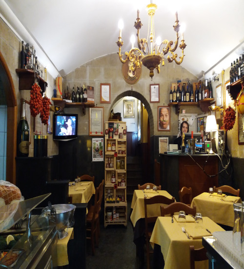

As origens da pizza são um mistério: há quem diga que ela é italiana, quem jure que ela veio do Egito e até aqueles que tem certeza de que a redonda veio da Grécia. Mas, se é difícil chegar a um consenso nesse sentido, pelo menos uma coisa é certa (ou quase): a primeira pizzaria do mundo fica em Nápoles, na Itália.


A Antica Pizzeria Port’Alba é a pizzaria mais antiga da qual se tem registro, ainda que possam ter existido outras antes dela. A história do local começou em 1738, antes mesmo da Itália ser um país unificado – na época, a região pertencia ao Reino de Nápoles. Mas, inicialmente, ela era apenas uma tenda que vendia pizza para quem estivesse de passagem. Foi apenas em 1830 que uma pizzaria de fato surgiu no local, nos modelos de um restaurante como conhecemos hoje. E, quase 200 anos depois, ela continua funcionando no centro histórico de Nápoles, para nossa alegria. Como estávamos por lá, não poderíamos visitar a cidade sem uma passada no local para experimentar uma tradicional pizza margherita.
A fachada da pizzaria é bem simples – e, invariavelmente com gente na frente, seja esperando para comer ou apenas passando pela rua. Quem quiser pode passar ali apenas para pegar uma pizza a portafoglio (uma espécie de pizza dobrada em quatro para comer enquanto caminha) ou, como nós fizemos, parar em uma das mesas para apreciar a pizza com a atenção que ela merece.

Com mesinhas na rua e também uma área interna, a Antica Pizzeria Port’Alba está associada à Associazione Verace Pizza Napoletana, que certifica as origens da pizza feita na cidade e possui regras rígidas que definem o que é uma “verdadeira pizza napolitana“. Sim, o prato é levado bem a sério por aqui, como vocês já devem ter reparado…